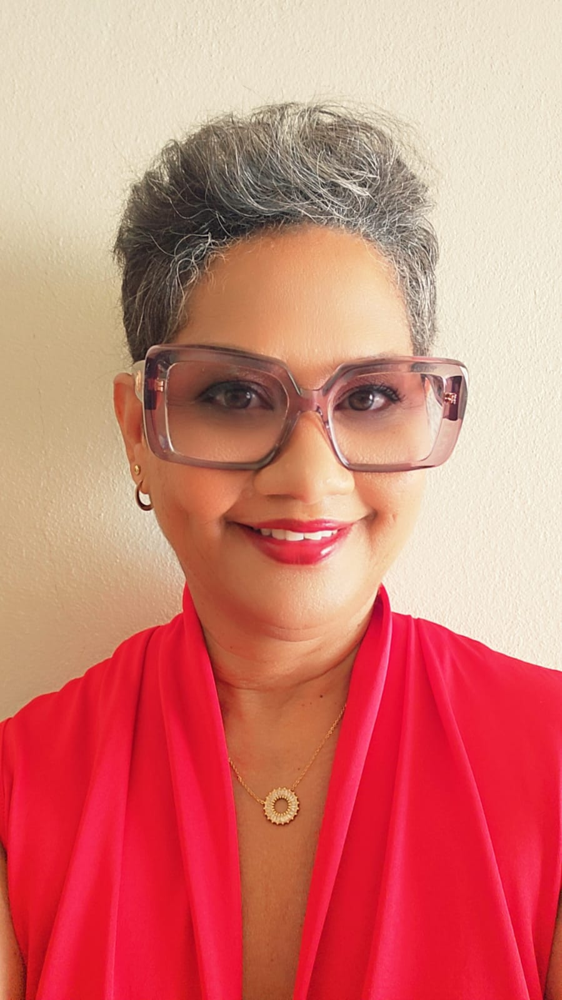
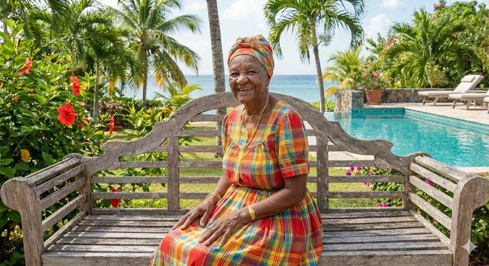
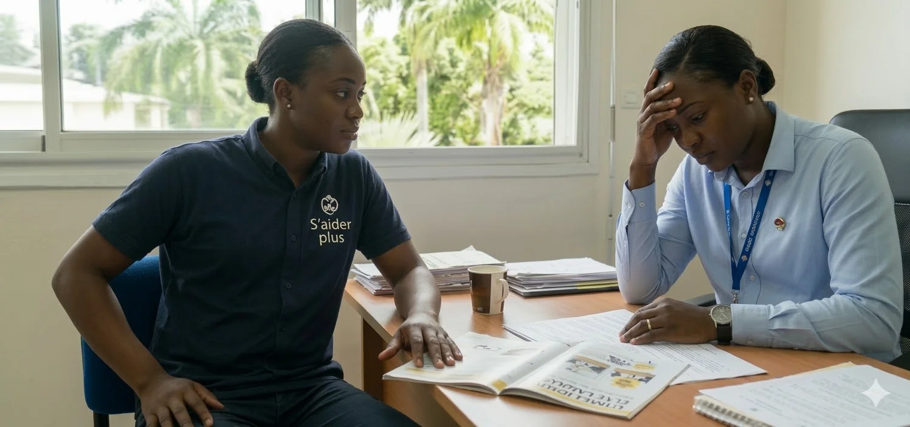

Fondatrice du projet S'AIDER PLUS Village
À l'origine du projet S'AIDER PLUS Village se trouve un engagement profondément humain.

Pendant dix-sept années, mon expérience d'aidante m'a confrontée aux réalités du vieillissement et aux défis auxquels sont confrontés les familles et les aidants. Cette expérience personnelle a façonné une sensibilité particulière aux situations de fragilité, mais aussi la conviction qu'il est possible de proposer des réponses plus humaines, mieux coordonnées et plus adaptées aux besoins des territoires.
Au fil de mon parcours professionnel dans l'accompagnement social et familial, cet engagement s'est transformé en une vision : celle de structurer une organisation territoriale capable de soutenir les aidants, de préserver l'autonomie des personnes âgées et de sécuriser les parcours de vie.
« Soutenir les aidants et accompagner le vieillissement avec dignité est pour moi un engagement de vie. »
S'AIDER PLUS Village incarne cette vision : transformer l'art de vivre antillais en une infrastructure territoriale du bien-vieillir, profondément ancrée dans les réalités et les forces du territoire. Mon ambition est également d'en faire une signature territoriale du bien-vieillir et un modèle de silver économie reproductible, créateur de valeur sociale, économique et territoriale dans les territoires ultramarins.
Une double légitimité rare — 17 ans de parcours professionnel spécialisé dans les questions sociales et familiales, enrichi par une expérience directe en tant qu'aidante salariée : connaissance des contraintes réelles, compréhension des besoins invisibles, proposition d'un accompagnement sur mesure.
Une trajectoire qui fait preuve — transition assumée, projet porté sur cinq années, persévérance malgré les obstacles. Capacité à porter une vision, structurer un projet complexe, dialoguer avec les institutions, fédérer les acteurs et tenir dans la durée.
Une infrastructure territoriale du bien-vieillir en Guadeloupe
La Guadeloupe fait face à un défi démographique sans précédent. Au cœur de l'archipel, le projet « S'AIDER PLUS Village » s'inscrit comme une réponse architecturale et sociale innovante, ancrée dans les spécificités culturelles antillaises.
Le Village propose une réponse intégrée, humaine et adaptée au territoire, combinant prévention, répit, coordination et qualité de vie, en cohérence avec les spécificités sociales, culturelles et environnementales.
Le bien-vieillir en Guadeloupe s'inscrit dans un art de vivre caractérisé par la force du lien familial, la solidarité intergénérationnelle, la convivialité quotidienne, la transmission culturelle et une relation étroite à la nature.

« Cultiver le lien, préserver l'autonomie. »
Vieillir au pays entouré des siens, dans un environnement qui protège l'autonomie et cultive le lien.
Les salariés aidants
Le Village S'AIDER PLUS accorde une attention particulière aux salariés aidants, reconnaissant leur double engagement professionnel et familial ainsi que leur rôle central dans le maintien à domicile des proches fragilisés.
Souvent insuffisamment soutenus et peu visibles, ces acteurs essentiels du parcours de vie nécessitent un accompagnement spécifique visant à prévenir l'épuisement, sécuriser leur organisation quotidienne et préserver leur équilibre personnel et professionnel.
Le Village se positionne comme un espace ressource dédié à leur soutien, proposant des parcours d'accompagnement, des services de coordination et des solutions de répit.

« Un parcours lisible. Un interlocuteur qui connaît votre situation. »
Le Village coordonne, oriente et relie — pour que la continuité ne repose plus sur l'aidant seul.